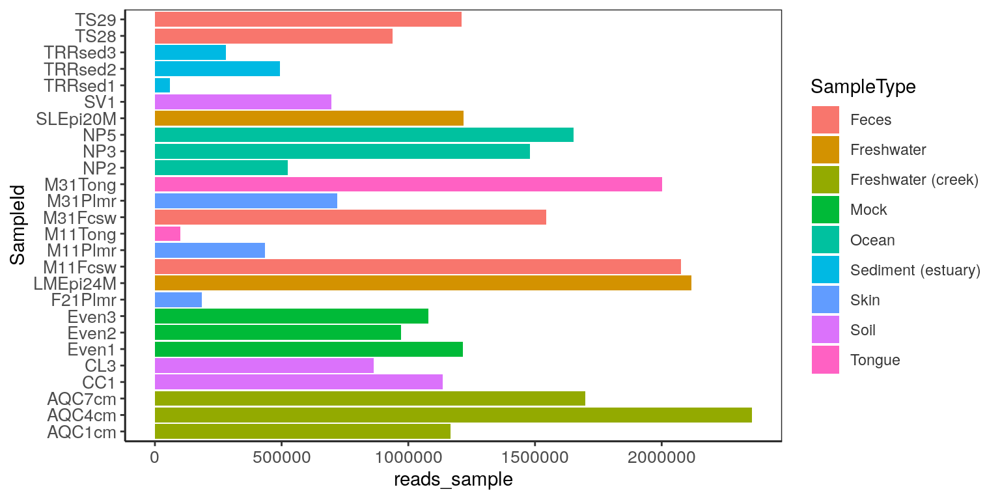

Chapter 2 Data operations
The SummarizedExperiment (SE) is a widely used class for analyzing data obtained by common sequencing techniques. SE is common structure for several Bioconductor packages that are used for analyzing RNAseq, ChIp-Seq data. SE class is also used in R packages for analyzing microarrays, flow cytometry, proteomics, single-cell sequencing data and many more. The single-cell analysis is facilitated by SingelCellExperiment class (SCE), which allows the user to store results of dimensionality reduction and alternative experiments. Alternative experiments (altExps) can be differently processed data within the analysis workflows.
Recently, TreeSummarizedExperiment (TSE), MicrobiomeExperiment were developed to extend the SE and SCE class for incorporating hierarchical information (including phylogenetic tree) and reference sequences.
The mia package implements tools using these classes for analysis of microbiome sequencing data.
2.1 Common terminologies
assays : This slot is similar to otu_table in phyloseq. In a SummarizedExperiment
object multiple assays, raw counts, transformed counts can be stored. See also
MultiAssayExperiment for storing data from multiple experiments such as RNASeq, Proteomics, etc.
rowData : This slot is similar to tax_table in phyloseq to store taxonomic information.
colData : This slot is similar to sample_data in phyloseq to store information related to samples.
rowTree : This slot is similar to phy_tree in phyloseq to store phylogenetic tree.
In this book, you will come across terms like FeatureIDs and SampleIDs.
FeatureIDs : These are basically OTU/ASV ids which are row names in assays and rowData.
SampleIDs : As the name suggests, these are sample ids which are column names in assays and row names in colData.
2.2 Retrieving data elements
Extract specific elements from TreeSummarizedExperiment and MicrobiomeExperiment object.
Example data
Create a relative abundance assay
## class: TreeSummarizedExperiment
## dim: 19216 26
## metadata(0):
## assays(2): counts relabundance
## rownames(19216): 549322 522457 ... 200359 271582
## rowData names(7): Kingdom Phylum ... Genus Species
## colnames(26): CL3 CC1 ... Even2 Even3
## colData names(7): X.SampleID Primer ... SampleType Description
## reducedDimNames(0):
## altExpNames(0):
## rowLinks: a LinkDataFrame (19216 rows)
## rowTree: a phylo (19216 leaves)
## colLinks: NULL
## colTree: NULLAbove there are now two assays
1] counts
2] relabundance
2.3 Extract specific elements
2.3.1 Assays
Assay slots hold the counts and transformed data for FeatureIDs and these can be extracted as follows:
Extract count abundance data.
## CL3 CC1 SV1 M31Fcsw M11Fcsw M31Plmr M11Plmr
## 549322 0 0 0 0 0 0 0
## 522457 0 0 0 0 0 0 0
## 951 0 0 0 0 0 0 1
## 244423 0 0 0 0 0 0 0
## 586076 0 0 0 0 0 0 0Extract relative abundance data.
## CL3 CC1 SV1 M31Fcsw M11Fcsw M31Plmr M11Plmr
## 549322 0 0 0 0 0 0 0.00000e+00
## 522457 0 0 0 0 0 0 0.00000e+00
## 951 0 0 0 0 0 0 2.30471e-06
## 244423 0 0 0 0 0 0 0.00000e+00
## 586076 0 0 0 0 0 0 0.00000e+002.3.2 colData
The sample information can be retrieved by accessing the colData as a data.frame.
me_sample_data <- colData(me) %>%
as.data.frame()
# show select row and columns
me_sample_data[1:5,1:5]## X.SampleID Primer Final_Barcode Barcode_truncated_plus_T
## CL3 CL3 ILBC_01 AACGCA TGCGTT
## CC1 CC1 ILBC_02 AACTCG CGAGTT
## SV1 SV1 ILBC_03 AACTGT ACAGTT
## M31Fcsw M31Fcsw ILBC_04 AAGAGA TCTCTT
## M11Fcsw M11Fcsw ILBC_05 AAGCTG CAGCTT
## Barcode_full_length
## CL3 CTAGCGTGCGT
## CC1 CATCGACGAGT
## SV1 GTACGCACAGT
## M31Fcsw TCGACATCTCT
## M11Fcsw CGACTGCAGCT2.3.3 rowData
The taxonomic classification of FeatureIds can be retrieved by accessing the rowData as a data.frame.
## Kingdom Phylum Class Order Family
## 549322 Archaea Crenarchaeota Thermoprotei <NA> <NA>
## 522457 Archaea Crenarchaeota Thermoprotei <NA> <NA>
## 951 Archaea Crenarchaeota Thermoprotei Sulfolobales Sulfolobaceae
## 244423 Archaea Crenarchaeota Sd-NA <NA> <NA>
## 586076 Archaea Crenarchaeota Sd-NA <NA> <NA>2.3.4 rowTree
The phylogenetic tree for FeatureIds can be retrieved by accessing the rowTree which is a phylo object.
##
## Phylogenetic tree with 19216 tips and 19215 internal nodes.
##
## Tip labels:
## 549322, 522457, 951, 244423, 586076, 246140, ...
## Node labels:
## , 0.858.4, 1.000.154, 0.764.3, 0.995.2, 1.000.2, ...
##
## Rooted; includes branch lengths.Check link between rownames FeatureIds.
2.4 Library size
The total counts/sample can be calculated using the colSums.
reads_sample <- colSums(assay(me, "counts"))
# add it to colData
colData(me)$reads_sample <- reads_sampleVisualize library size
me_sample_data <- colData(me) %>%
as.data.frame() %>%
rownames_to_column("SampleId")
ggplot(me_sample_data, aes(reads_sample, SampleId)) +
geom_col(aes(fill=SampleType)) +
theme_bw() + # prettify plot
theme(axis.text = element_text(size = 10),
axis.line.x = element_line(color = "#242424"),
axis.line.y = element_line(color = "#242424"),
panel.grid.major = element_blank(), panel.grid.minor = element_blank(),
panel.border = element_rect(colour = "#242424"),
legend.key = element_blank(), legend.text = element_text(color = "#353535"),
legend.background = element_rect(colour = NA, fill = NA))
2.5 Agglomerate
Agglomerate at a specific taxonomic rank. If multiple assays (counts and relabundance) exists, both will be agglomerated.
## class: TreeSummarizedExperiment
## dim: 603 26
## metadata(0):
## assays(2): counts relabundance
## rownames(603): Class::Thermoprotei Family:Sulfolobaceae ...
## Family:Thermodesulfobiaceae Phylum::SR1
## rowData names(7): Kingdom Phylum ... Genus Species
## colnames(26): CL3 CC1 ... Even2 Even3
## colData names(8): X.SampleID Primer ... Description reads_sample
## reducedDimNames(0):
## altExpNames(0):
## rowLinks: a LinkDataFrame (603 rows)
## rowTree: a phylo (603 leaves)
## colLinks: NULL
## colTree: NULL## CL3 CC1 SV1 M31Fcsw M11Fcsw M31Plmr
## Class::Thermoprotei 0.0000000000 0.000000e+00 0 0 0 0
## Family:Sulfolobaceae 0.0000000000 0.000000e+00 0 0 0 0
## Class::Sd-NA 0.0000000000 0.000000e+00 0 0 0 0
## Order::NRP-J 0.0001990563 2.069651e-04 0 0 0 0
## Family:SAGMA-X 0.0000000000 6.164919e-06 0 0 0 0
## M11Plmr
## Class::Thermoprotei 0.000000e+00
## Family:Sulfolobaceae 2.304710e-06
## Class::Sd-NA 0.000000e+00
## Order::NRP-J 6.914131e-06
## Family:SAGMA-X 0.000000e+00## CL3 CC1 SV1 M31Fcsw M11Fcsw M31Plmr M11Plmr
## Class::Thermoprotei 0 0 0 0 0 0 0
## Family:Sulfolobaceae 0 0 0 0 0 0 1
## Class::Sd-NA 0 0 0 0 0 0 0
## Order::NRP-J 172 235 0 0 0 0 3
## Family:SAGMA-X 0 7 0 0 0 0 0These newly created data can also be kept in altExp a feature provided by SingleCellExperiment.
altExpNames now consists of family level data. This can be extended to use any level present in Kingdom, Phylum, Class, Order, Family, Genus, Species.
2.6 Get unique
Get which Phyla are present.
## [1] "Crenarchaeota" "Euryarchaeota" "Actinobacteria" "Spirochaetes"
## [5] "MVP-15" "Proteobacteria"2.7 Pick specific
Retrieving of specific elements are required for specific analysis. For instance, extracting abundances for a specific taxa in all samples or all taxa in one sample.
2.8 Join
Joining assay and rowData in one data frame for exploring featureIds and their taxonomic identities.
me_reab <- assay(me, "relabundance") %>%
as.data.frame() %>%
rownames_to_column("FeatureID")
me_joined <- rowData(me) %>%
as.data.frame() %>%
rownames_to_column("FeatureID") %>%
left_join(me_reab) ## Joining, by = "FeatureID"## FeatureID Kingdom Phylum Class Order Family
## 1 549322 Archaea Crenarchaeota Thermoprotei <NA> <NA>
## 2 522457 Archaea Crenarchaeota Thermoprotei <NA> <NA>
## 3 951 Archaea Crenarchaeota Thermoprotei Sulfolobales Sulfolobaceae
## Genus Species
## 1 <NA> <NA>
## 2 <NA> <NA>
## 3 Sulfolobus Sulfolobusacidocaldarius2.9 Get top taxa and taxonomy
2.9.1 Features
The getTopTaxa can be used for identifying top taxa in the data.
top_features <- getTopTaxa(me, method="median", top=10)
tax_data <- rowData(me)[top_features,taxonomyRanks(me)]
tax_data %>% as.data.frame()## Kingdom Phylum Class Order
## 549656 Bacteria Cyanobacteria Chloroplast Stramenopiles
## 331820 Bacteria Bacteroidetes Bacteroidia Bacteroidales
## 317182 Bacteria Cyanobacteria Chloroplast Stramenopiles
## 94166 Bacteria Proteobacteria Gammaproteobacteria Pasteurellales
## 279599 Bacteria Cyanobacteria Nostocophycideae Nostocales
## 158660 Bacteria Bacteroidetes Bacteroidia Bacteroidales
## 329744 Bacteria Actinobacteria Actinobacteria Actinomycetales
## 326977 Bacteria Actinobacteria Actinobacteria Bifidobacteriales
## 248140 Bacteria Bacteroidetes Bacteroidia Bacteroidales
## 550960 Bacteria Proteobacteria Gammaproteobacteria Enterobacteriales
## Family Genus Species
## 549656 <NA> <NA> <NA>
## 331820 Bacteroidaceae Bacteroides <NA>
## 317182 <NA> <NA> <NA>
## 94166 Pasteurellaceae Haemophilus Haemophilusparainfluenzae
## 279599 Nostocaceae Dolichospermum <NA>
## 158660 Bacteroidaceae Bacteroides <NA>
## 329744 ACK-M1 <NA> <NA>
## 326977 Bifidobacteriaceae Bifidobacterium Bifidobacteriumadolescentis
## 248140 Bacteroidaceae Bacteroides Bacteroidescaccae
## 550960 Enterobacteriaceae Providencia <NA>